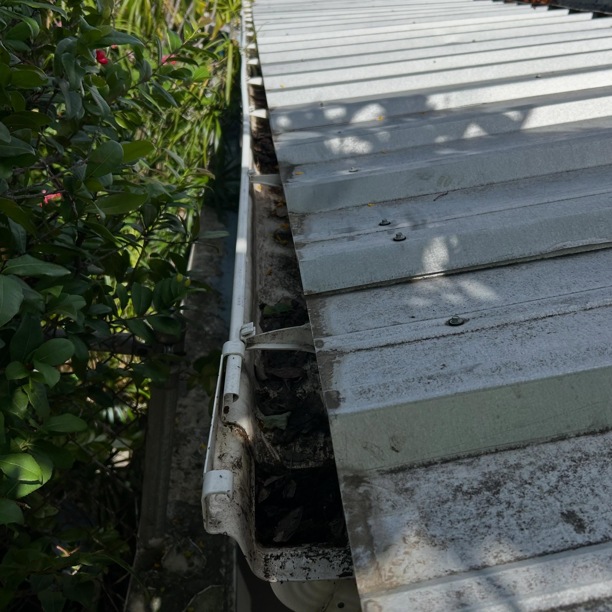
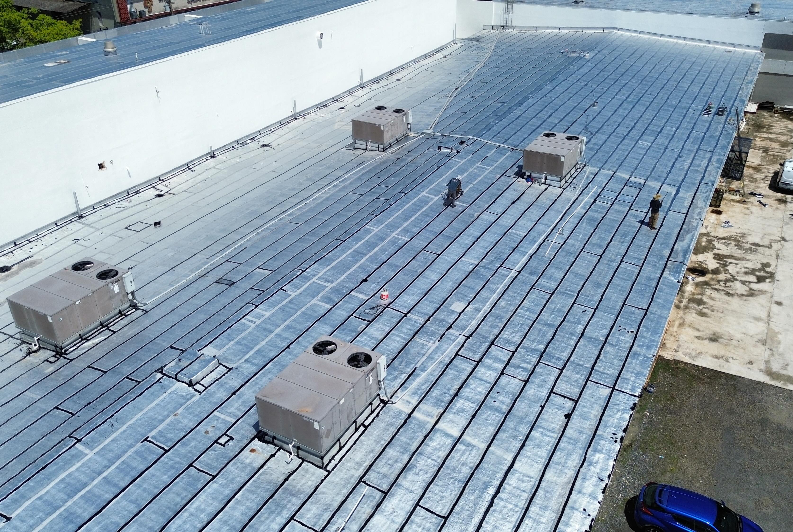
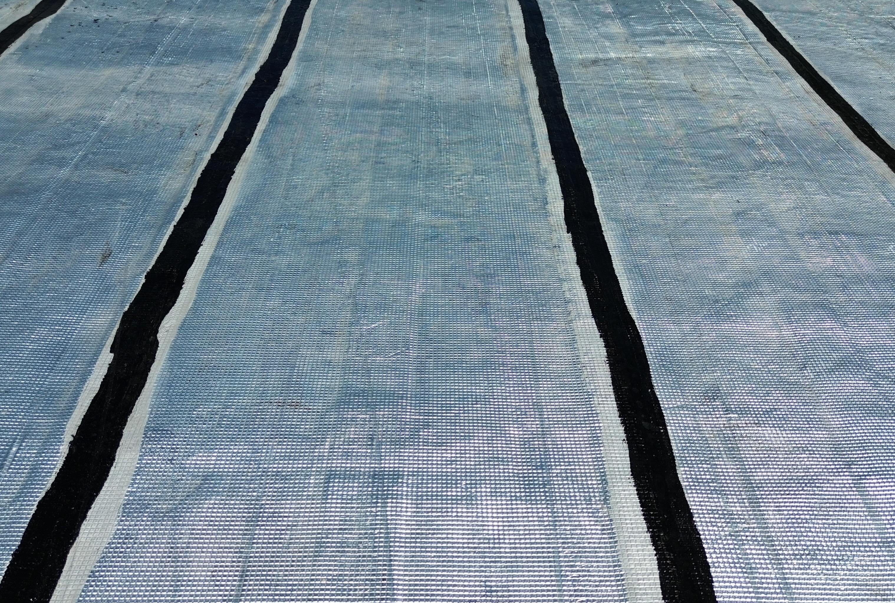
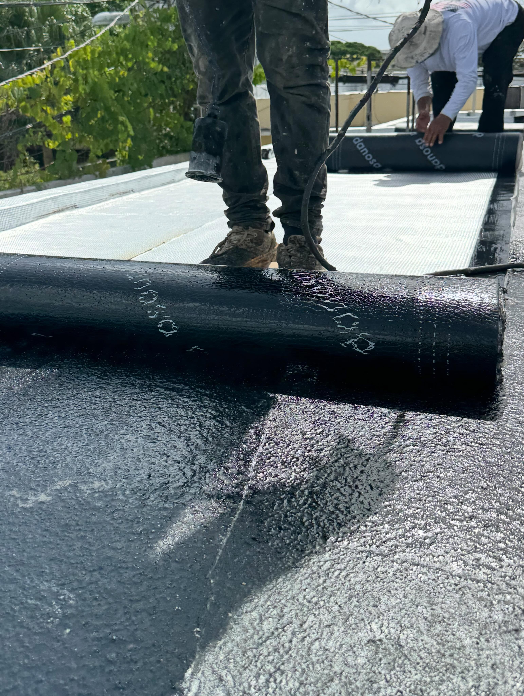
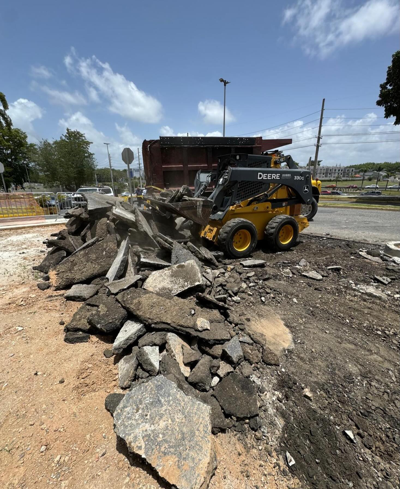
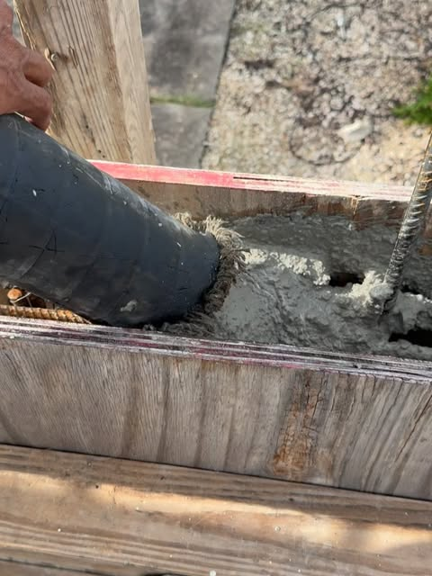
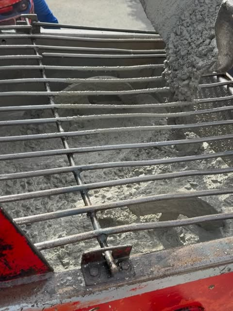
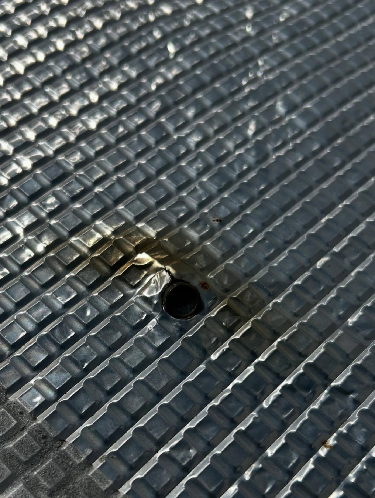

Viejo San Juan · Puerto Rico
TECHOS QUE AGUANTAN PUERTO RICO
Roofing comercial e industrial, sellado e impermeabilización con los más altos estándares de calidad, supervisión y seguridad.
Viejo San Juan · Puerto Rico
Roofing comercial e industrial, sellado e impermeabilización con los más altos estándares de calidad, supervisión y seguridad.
Lo que hacemos


Techos para naves, comercios e industrias con supervisión y seguridad en cada fase.


Protección total contra filtraciones y el clima de Puerto Rico.


Sistemas de impermeabilización duraderos con membrana asfáltica.


Fabricación e instalación de canales tipo box gutter en acero galvanizado.


Demolición, muros de concreto y obra general con maquinaria propia.
Galería

Quiénes somos
Puerto Rico Roofing & Construction Company: calidad, supervisión, seguridad y atención al detalle en cada proyecto. Especialistas en roofing comercial e industrial, sellado de techos, impermeabilización con membrana asfáltica, canales tipo box gutter y construcción general. Ubicados en Viejo San Juan, trabajando proyectos en todo Puerto Rico.
Hablar con nosotrosPreguntas frecuentes
Estamos en Viejo San Juan, Puerto Rico.
Sellado de techos comercial e industrial y más: Roofing comercial e industrial, Sellado de techos, Membrana asfáltica.
Escríbenos por WhatsApp al 787-500-4837 o llena el formulario de contacto y te respondemos por WhatsApp.
Sí, síguenos en Instagram como @@fortalezaroofing.
Sí, estamos en Viejo San Juan y trabajamos proyectos en todo Puerto Rico.
Desde lo más alto
Sellado de techos · @fortalezaroofing · Viejo San Juan y todo Puerto Rico